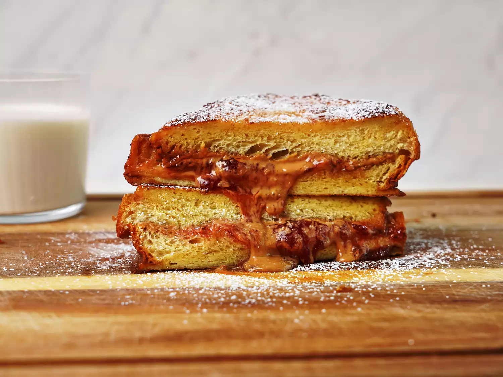

PB&J Stuffed French Toast Recipe

Description
A mashup of two favorites: PB&J and French toast. Ready in a few minutes, this stuffed French toast is simply delicious, just like peanut butter and jelly.
Ingredients
- 8 thick slices brioche bread
- 1/4 cup peanut butter
- 1/4 cup jelly
- 3 large eggs
- 1/2 cup whole milk
- 1/2 teaspoon cinnamon
- 1/4 cup (1/2 stick) butter, divided
- 1/2 tablespoon powdered sugar, or to taste (for dusting)